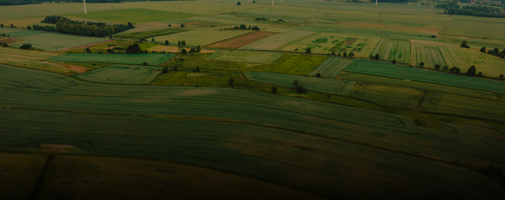

-
НОЭКС. Нам доверяют. C 1988 года.
С равным успехом мы работаем на участках строительства технически сложных и ответственных объектов, и типовых сооружений. Все работы проходят государственную экспертизу.
-
НОЭКС. Нам доверяют. C 1988 года.
С равным успехом мы работаем на участках строительства технически сложных и ответственных объектов, и типовых сооружений. Все работы проходят государственную экспертизу.
-

НОЭКС. Нам доверяют. C 1988 года.
С равным успехом мы работаем на участках строительства технически сложных и ответственных объектов, и типовых сооружений. Все работы проходят государственную экспертизу.
-
НОЭКС. Нам доверяют. C 1988 года.
С равным успехом мы работаем на участках строительства технически сложных и ответственных объектов, и типовых сооружений. Все работы проходят государственную экспертизу.
Инженерные изыскания для строительства
Основа для предпроектной документации
Инженерные изыскания – это неотъемлемая часть проектной деятельности, обеспечивающая всестороннее изучение природных и техногенных условий местности планируемого строительства.
Проведение инженерных работ позволяет получить объем необходимых данных для аргументирования технической возможности и экономической целесообразности проектирования и застройки на конкретной территории. Информировать о возможных рисках и изменениях геологической ситуации и окружающей среды, связанных со строительством и эксплуатацией объекта, разработать мероприятия по охране и защите природы и населения от влияния техногенных факторов.
Компания НПО «НОЭКС» гарантирует качественное проведение инженерных изысканий в Москве и Подмосковье и других регионах
Освновные виды инженерных изысканий
Инженерно-геологические изыскания
Получение востребованных материалов исследований для обоснования возможностей проектирования и стройки в существующей геологической ситуации
Инженерно-геодезические изыскания
Комплексные мероприятия по изучению и анализу ситуационных данных о рельефе земельного участка, его гидросети, растительности, текущем использовании, наличии и расположении зданий и сооружений, линейных объектов, наземных и подземных коммуникаций
Инженерно-экологические изыскания
Мероприятия по изучению и мониторингу текущего состояния окружающей среды, прогнозирование вероятных негативных изменений экосистемы от социально-экономических факторов и техногенной нагрузки
ЗАКАЗАТЬ ИНЖЕНЕРНЫЕ ИЗЫСКАНИЯ
Описание заказа инженерных изысканий
Заказать инженерные изыскания для строительства у нашей компании можно как в комплексе исследований, так и отдельными видами работ.
Проведение изысканий под строительство полным циклом значительно снизит стоимость инженерных изысканий и сократит сроки. НПО «НОЭКС» отвечает за качество исследований и берет на себя ответственность за проделанный труд.
Подписав договор, застройщик застрахован от непредвиденных последствий. К услугам заказчика неординарный интеллект и слаженные действия профессиональной команды, укомплектованный парк буровой техники, оснащенная лаборатория и фонд архивных документов.
Стоимость инженерных изысканий в Москве и Подмосковье рассчитывается индивидуально, в зависимости от объемов технического задания и срочности выполнения, удаленности участка, сложности рельефа и геологической ситуации.
Предлагаем заказать изыскания для строительства в нашем профессиональном исполнении, как взаимовыгодное сотрудничество для достижения общей цели.
ЦЕЛИ И ЗАДАЧИ ИНЖЕНЕРНЫХ ИЗЫСКАНИЙ
Цель
Комплексное исследование земельной площади проектируемого строительства с получением геологического, геодезического и экологического обоснования возможностей проектирования и строительства в данных геологических и природных условиях
Задачи
Получить и предоставить необходимую информацию для подтверждения возможности и целесообразности проектирования и застройки на конкретной территории, с учетом геологических условий и экологической ситуации
Данные
Используются для эффективного проектирования объекта, дальнейшего строительства и эксплуатации с технической, экономической и социальной точки зрения, без вреда для окружающей среды и местного населения
ЦВИДЫ ИНЖЕНЕРНЫХ ИЗЫСКАНИЙ ДЛЯ СТРОИТЕЛЬСТВА
Инженерно-геологические изыскания
Исследования, нацеленные на получение достоверной информации о геологических условиях земельного участка, с изучением физико-механических свойств грунтов, построением геологических разрезов, для грамотного и безопасного проектирования оснований, и фундаментов будущих построек. Прорабатываются архивные материалы, выполняется полный объем полевых и лабораторных работ, и их камеральная обработка, предоставляется технический отчет
Инженерно-геодезические изыскания
Предоставляют достоверные сведения о рельефе участка, о расположении инженерных коммуникаций, привязке объекта к существующей инфраструктуре, с выполнением топографической съемки и технического отчета
Инженерно-экологические изыскания
Дают оценку текущей экологической ситуации и прогноз на изменение природной обстановки в данной местности в связи с влиянием техногенного воздействия. Разработка рекомендаций по минимизации вредного воздействия на окружающую природу и жизнедеятельность человека